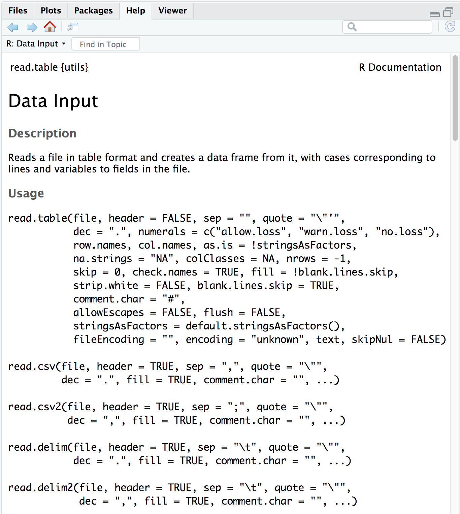
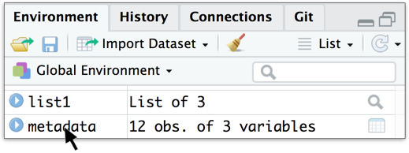
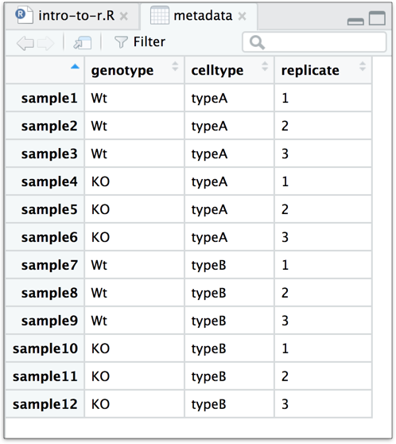
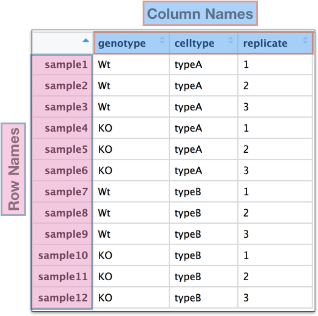

Leitura e inspeção de dados
BO304
Objetivos de Aprendizagem
- Demonstrar como ler dados existentes no R
- Utilizar funções base do R para inspecionar estruturas de dados
Leitura de dados no R
O básico
Independentemente da análise específica que estamos realizando no R, geralmente precisamos importar dados para qualquer análise. Por isso, aprender como ler dados é um componente crucial do aprendizado em R.
Existem muitas funções para importar dados, e a função utilizada dependerá do formato do arquivo. Abaixo está uma tabela com exemplos de funções usadas para importar tipos comuns de dados em texto (texto simples).
| Tipo de dado | Extensão | Função | Pacote |
|---|---|---|---|
| Valores separados por vírgula | csv | read.csv() |
utils (padrão) |
read_csv() |
readr (tidyverse) | ||
| Valores separados por tabulação | tsv | read_tsv() |
readr |
| Outros formatos delimitados | txt | read.table() |
utils |
read_table() |
readr | ||
read_delim() |
readr |
Por exemplo, se tivermos um arquivo de texto onde as colunas são separadas por vírgulas (comma-separated values), podemos usar a função read.csv. No entanto, se os dados forem separados por outro delimitador (por exemplo, “:”, “;”, ” “,”), podemos usar a função genérica read.table e especificar o delimitador (sep = " ").
Nota: o delimitador
"\t"é uma abreviação para tabulação (tab).
Na tabela acima, nos referimos às funções base do R como pertencentes ao pacote “utils”. Além das funções base, também listamos funções de outros pacotes que podem ser usadas para importar dados, especificamente o pacote “readr”, que é instalado junto com o conjunto de pacotes “tidyverse”.
Além de arquivos de texto simples, também é possível importar dados de outros softwares estatísticos e do Excel usando funções de diferentes pacotes.
| Tipo de dado | Extensão | Função | Pacote |
|---|---|---|---|
| Stata versão 13–14 | dta | readdta() |
haven |
| Stata versão 7–12 | dta | read.dta() |
foreign |
| SPSS | sav | read.spss() |
foreign |
| SAS | sas7bdat | read.sas7bdat() |
sas7bdat |
| Excel | xlsx, xls | read_excel() |
readxl (tidyverse) |
Note que essas listas não são exaustivas, e outras funções podem existir para importar dados. Com o tempo, você provavelmente desenvolverá preferência por determinadas funções para cada tipo de dado.
Metadados
Ao trabalhar com grandes conjuntos de dados, é muito provável que você utilize um arquivo de metadados, que contém informações sobre cada amostra do conjunto de dados.

Os metadados são informações extremamente importantes, e recomendamos que você pense em criar um documento contendo o máximo de metadados possível antes de importar os dados para o R.
Aqui está uma leitura adicional sobre metadados do HMS Data Management Working Group.
A função read.csv()
Vamos importar o arquivo de metadados que baixamos anteriormente (mouse_exp_design.csv ou mouse_exp_design.txt) usando a função read.csv.
Primeiro, verifique os argumentos da função usando ? para garantir que está fornecendo todas as informações corretamente:
?read.csv
A primeira coisa que você irá notar é que a documentação exibida é da função read.table(). Isso ocorre porque ela é a função “pai”, e todas as outras funções pertencem à mesma família.
O próximo item da documentação é a Descrição, que especifica que a saída dessas funções será um data frame —
“Lê um arquivo em formato de tabela e cria um data frame a partir dele, com casos correspondendo às linhas e variáveis aos campos do arquivo.”
Na seção Usage, todos os argumentos listados para read.table() são os valores padrão para todos os membros da família, a menos que sejam especificados de outra forma. Vamos ver dois exemplos:
- Separador
read.table()→sep = ""(espaço ou tabulação)read.csv()→sep = ","(vírgula)
- Cabeçalho (
header)read.table()→header = FALSEread.csv()→header = TRUE
A principal conclusão da seção “Usage” para read.csv() é que ela possui um único argumento obrigatório: o caminho e o nome do arquivo entre aspas.
O argumento
stringsAsFactorsAs funções da família
read.table {utils}possuem o argumentostringsAsFactors, que por padrão éFALSE.Se
stringsAsFactors = TRUE, colunas do tipocharacterserão convertidas emfactor.Se você deseja manter colunas como vetores de caracteres (por exemplo, nomes de genes), certifique-se de que
stringsAsFactors = FALSE.
Criando um data frame a partir do arquivo
Verifique a extensão do arquivo mouse_exp_design dentro da pasta data.
metadata <- read.csv(file="data/mouse_exp_design.csv")
# OU
# metadata <- read.csv(file="data/mouse_exp_design.txt")NOTA: O RStudio oferece autocompletar com a tecla Tab. Use sempre que possível.
Clique aqui para ver como importar dados usando o botão Import Dataset
Você também pode usar o botão Import Dataset no painel Environment.




Exercício 1
- Baixe este arquivo
.txte salve na pastadata. - Leia o arquivo usando
read.table()e salve comoproj_summary. - Exiba o conteúdo no console.
Inspeção de estruturas de dados
metadatahead(metadata)Lista de funções para inspeção de dados
str()class()summary()head()tail()Vetores e fatores:
length()
Data frames e matrizes:
dim()nrow()ncol()rownames()colnames()
Exercício 2
- Use
class()emglengthsemetadata - Use
summary()emproj_summary - Qual o comprimento de
samplegroup? - Quais as dimensões de
proj_summary? - Qual a estrutura de
rownames(metadata)? - [Opcional] Quantos elementos existem em
colnames(proj_summary)?
***
Material desenvolvido pelo Harvard Chan Bioinformatics Core (HBC), licenciado sob CC BY 4.0.
Conteúdo adaptado de materiais da Data Carpentry, também sob licença CC BY 4.0.